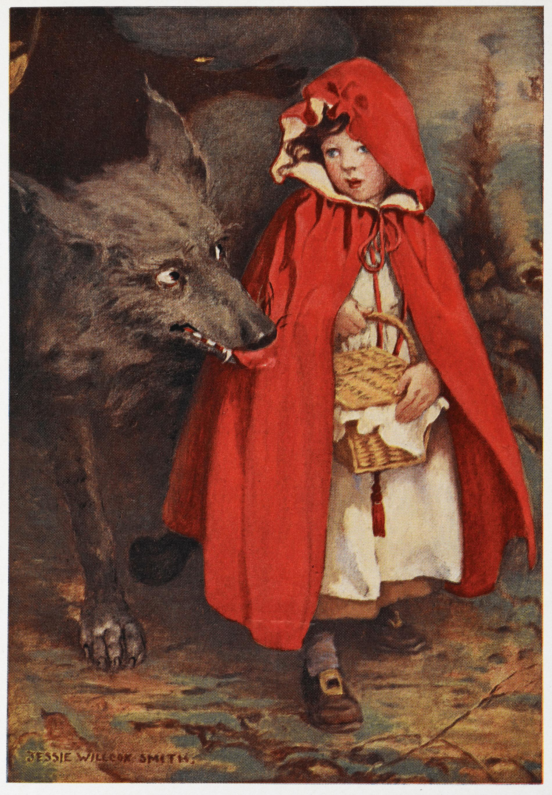

El clásico relato de los Hermanos Grimm
Capítulo I: El encargo de la madre

Había una vez una dulce niña a la que todos llamaban Caperucita Roja, debido a una hermosa caperuza de terciopelo rojo que su abuela le había regalado y que ella llevaba a todas partes. Vivía con su madre en un pueblo cercano a un gran bosque. Un día, su madre la llamó y le entregó una cesta con un pastel y una botella de vino.
—Llévale esto a tu abuela, que está enferma y débil en su casa del bosque, para que recupere las fuerzas —le dijo—. Ve con cuidado, no te salgas del camino principal y no hables con extraños.
Caperucita prometió ser obediente y se despidió con alegría, adentrándose en el sendero del bosque.
Capítulo II: El encuentro en el bosque
No había caminado mucho cuando se topó con el Lobo. Caperucita, que era una niña inocente, no sabía lo peligroso que podía ser aquel animal y no sintió ningún temor al verlo.
—Buenos días, Caperucita Roja —dijo el Lobo con una voz falsamente amable.
—Buenos días, señor Lobo —respondió ella.
—¿A dónde vas tan temprano con esa cesta?
—A casa de mi abuelita, que está enferma. Le llevo un pastel y un poco de vino.
—¿Y dónde vive tu abuela, hermosa niña?
—Un poco más adentro del bosque, pasando el molino, en la primera casa que se encuentra bajo los tres grandes robles —explicó Caperucita, sin sospechar nada.
El Lobo, relamiéndose los bigotes, pensó que la niña sería un bocado tierno y decidió trazar un plan para comérselas a las dos. Con astucia, le sugirió:
—Mira qué flores tan bonitas crecen por aquí, ¿por qué no le recoges un ramo a tu abuela? Seguro que la alegrará.
Caperucita miró a su alrededor y, olvidando el consejo de su madre, se desvió del camino para recoger flores. Mientras la niña se adentraba más y más entre los árboles, el Lobo corrió a toda velocidad directamente hacia la casa de la abuela.
Capítulo III: La trampa del Lobo
Al llegar, el Lobo llamó a la puerta:
—¡Toc, toc!
—¿Quién es? —preguntó la anciana desde la cama.
—Soy Caperucita Roja —fingió el Lobo agudizando la voz—. Te traigo un pastel.
—Entra, querida, levanta el pestillo, que yo no puedo levantarme —dijo la abuela.
El Lobo abrió la puerta, entró de un salto y, sin mediar palabra, se tragó a la pobre anciana de un solo bocado. Inmediatamente, se puso el camisón de la abuela, su gorro de dormir, se metió en la cama y corrió las cortinas para esperar a la niña.
Capítulo IV: Las extrañas preguntas
Poco después, Caperucita llegó cargada de flores. Al ver la puerta abierta, sintió un extraño presentimiento, pero entró y se acercó a la cama. El Lobo estaba allí, tapado hasta la nariz.
—¡Oh, abuelita! —exclamó la niña extrañada—. ¡Qué orejas tan grandes tienes!
—Son para oírte mejor, niñita mía —respondió el Lobo imitando la voz de la anciana.
—¡Abuelita, qué ojos tan grandes tienes!
—Son para verte mejor.
—¡Abuelita, qué manos tan grandes tienes!
—Son para abrazarte mejor.
—Pero ¡abuelita, qué boca tan terriblemente grande tienes!
—¡Son para comerte mejooor! —gritó el Lobo.